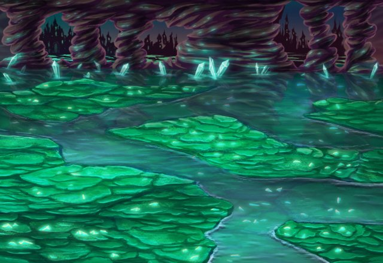

ラ・ヴェーダ共和国に大神皇カルナ・マスタを奉る人々が存在した。その中でも強大な力を持つ選ばれた戦士は神より神具を授けられ様々な神意を実行したという。
その者たちの名は大神皇神衛使メイリス。神意の実行のみならず人々のために戦い多くの人々から敬愛された者たちである。
クレア
私の力は神の力。 どんな敵でも我が槍で貫いてみせる！


クルト
ボクは強く正しいんだ。 姉さんと同じようにね。
イヴリス
全力を出せそうな場所、探してたんですよ。 私、遠慮しませんよー！！
ディアナ
おだてたってダメよ。 できることを精一杯やるだけなんだから。
ファダル
何事も落ち着いて考えるんだ。 そうすれば答えは見えてくるはずだ。
神々との大戦が始まる直前、そんな彼らのもとに、ある神託がくだされる……。
ファダル
異界イシュグリアの魔神か……。 厄介だな……。
ファダル
……推測するにしても、 情報が少な過ぎるか……。
クェイド
難しい顔をしているところを見ると、 厄介な神託だったみたいだね、ファダル。
ファダル
……お前にも同席するよう 事前に言っておいたはずだが。
クェイド
でも、神官様たちから 神託を伝えてもらう時って、
クェイド
色んな手順とか礼儀があって面倒だからね。
クレア
大神皇様から授かる神託に、 良いも悪いもない。
ディアナ
でも、私たちが 動く必要があるような不幸なことは
クルト
ボクたちメイリスは、 神衛使としての使命を果たすだけさ。
イヴリス
相変わらずクルトくんは、 お姉さんのことが大好きなんですね。
イヴリス
クェイドさんともそれくらい 仲良くできればいいんですけど。
クルト
なんで今の話の流れで、 アイツの名前が出てくるんだよ！
クレア
クルト、あなたがなぜかクェイドに 対抗意識を持っていることは知っている。
クレア
私たちは大神皇カルナ・マスタ様を信奉する 仲間なんだから。
クレア
それにクェイドは、 あれで頼りになるところもあるでしょう？
クレア
クェイド、ファダル、 どんな神託をいただいたの？
クェイド
ゴメン。 俺は遅れて着いたから聞いてないんだ。
クルト
メイリスの責務を 何だと思っているんだよ！
ファダル
いまさら、こいつに怒っても 仕方がない。
ディアナ
……その様子だと あんまり良い内容じゃなかったの？
ファダル
良いか悪いかは、 まだ判断付かないところだな……。
ファダルが皆に伝えた神託の内容…。
それは、異界イシュグリアに棲まう魔神ラグルヴォードがこの世界に侵攻しようとしているとの情報。そして、大神皇カルナ・マスタの名のもとにイシュグリアへと向かい、かの魔神を討伐するよう神衛使メイリスたちに命じたものだった。
神託を聞いたメイリスたちは、直ちに開かれたゲートより未知の異界イシュグリアへと向かう。そこで何が待ち受けているか知らずに……。